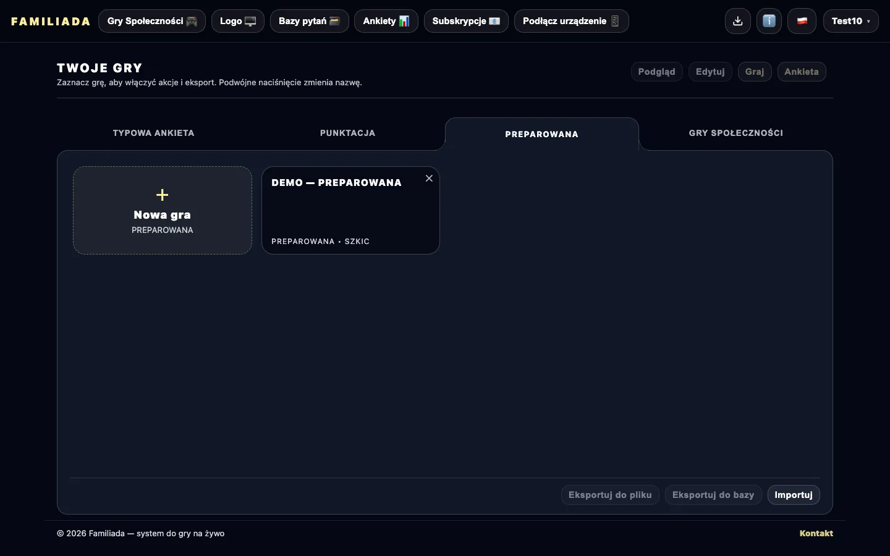
Tworzenie gry i wybór trybu
Trzy tryby gry — w zależności od tego jak chcesz zbierać odpowiedzi. Sondaż tekstowy i punktowany zbierają głosy od uczestników, preparowana pozwala samemu wpisać odpowiedzi i punkty z góry.
Zbierz odpowiedzi od uczestników w sondażu, a potem poprowadź grę na żywo — z tablicą wyników jak w TV, panelem operatora i widokiem prowadzącego. Wszystko w przeglądarce, na sprzęcie który już masz.
O systemie
System pozwala zorganizować grę w stylu Familiada od początku do końca — od zebrania odpowiedzi w sondażu, przez przygotowanie pytań, aż po prowadzenie rozgrywki na żywo. Działa w przeglądarce, bez instalacji, na komputerze, tablecie i telefonie.
Odpowiedzi uczestników zbierane są przez sondaż — każdy głosuje przez link lub kod QR ze swojego telefonu. Wyniki są automatycznie normalizowane do 100 punktów, dokładnie jak w prawdziwej Familiadzie w telewizji. „Powiedziano: 67."
Do prowadzenia gry wystarczą urządzenia które już masz — rzutnik lub telewizor jako tablica wyników, tablet dla prowadzącego, telefon jako buzzer do pojedynku. Urządzenia łączą się przez internet i nie muszą być w tej samej sieci.
Funkcje

Trzy tryby gry — w zależności od tego jak chcesz zbierać odpowiedzi. Sondaż tekstowy i punktowany zbierają głosy od uczestników, preparowana pozwala samemu wpisać odpowiedzi i punkty z góry.
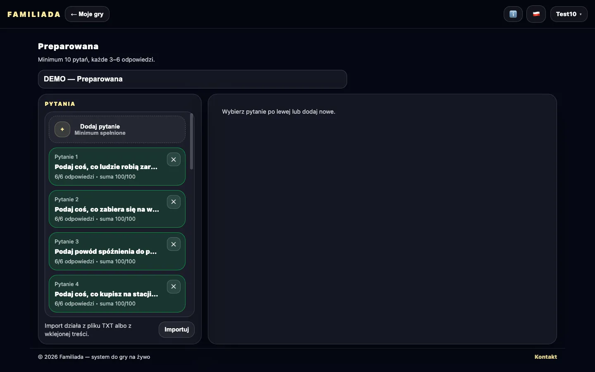
Dodajesz pytania i ustawiasz strukturę gry. W zależności od trybu możesz wpisać odpowiedzi i punkty samemu, albo zebrać je z sondażu.
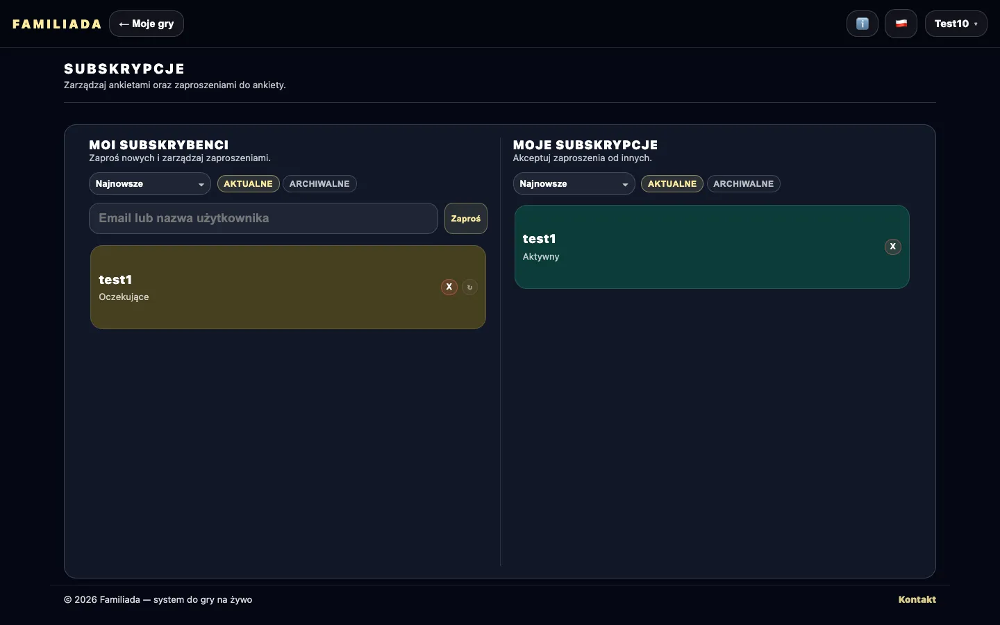
Dodajesz znajomych, żeby jednym kliknięciem udostępniać im sondaże i wspólnie organizować grę. Przydatne gdy przygotowujesz event w kilka osób.
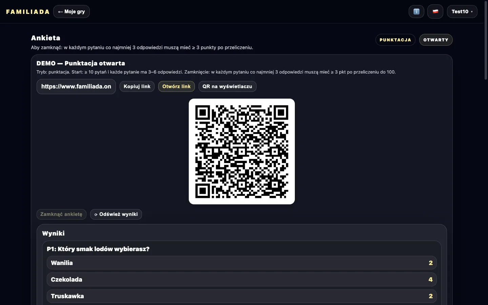
Wysyłasz link lub pokazujesz kod QR — uczestnicy głosują ze swoich telefonów, każdy ze swojej sieci. Wyniki spływają na żywo i są normalizowane do 100 jak w prawdziwej Familiadzie.
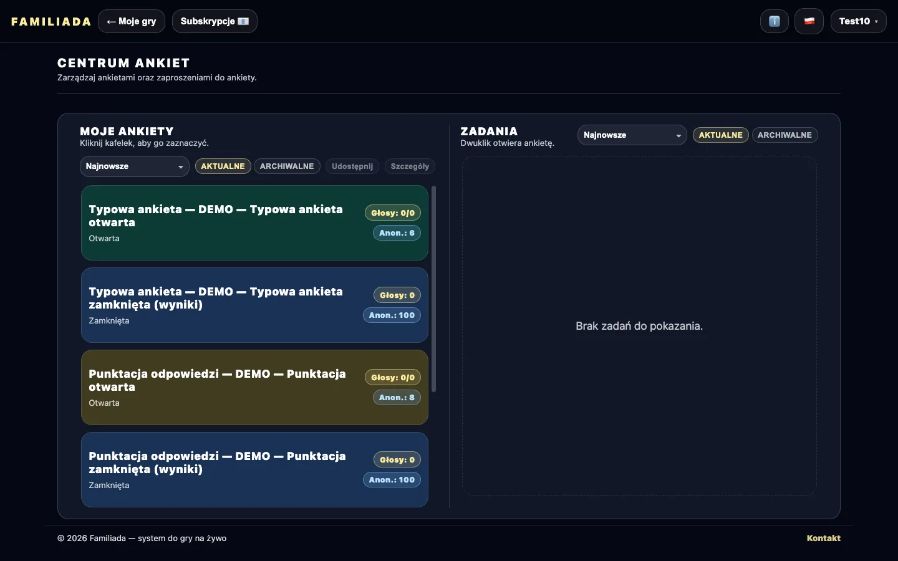
W jednym miejscu uruchamiasz i zamykasz głosowania, śledzisz postęp i udostępniasz sondaże znajomym. Wszystko gotowe zanim wejdziesz na salę.
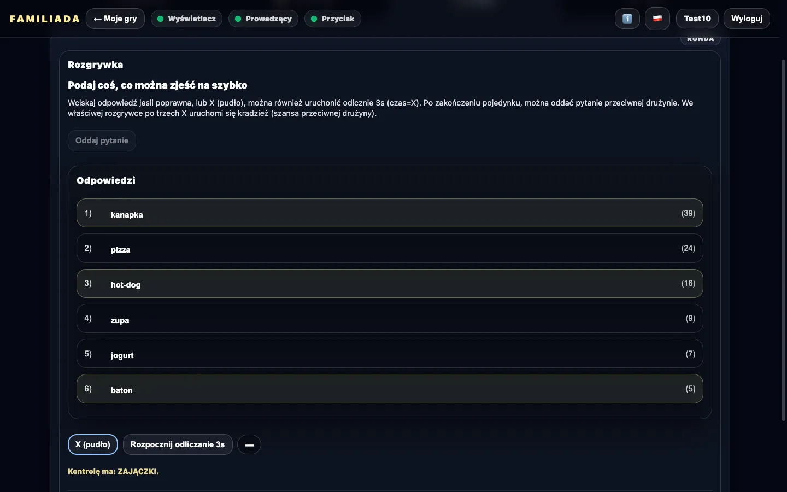
Operator otwiera rundy, odkrywa odpowiedzi, przyznaje punkty i zatwierdza błędy (X). Panel prowadzi przez kolejne etapy — nawet pierwszy raz nie zgubisz się w trakcie gry.
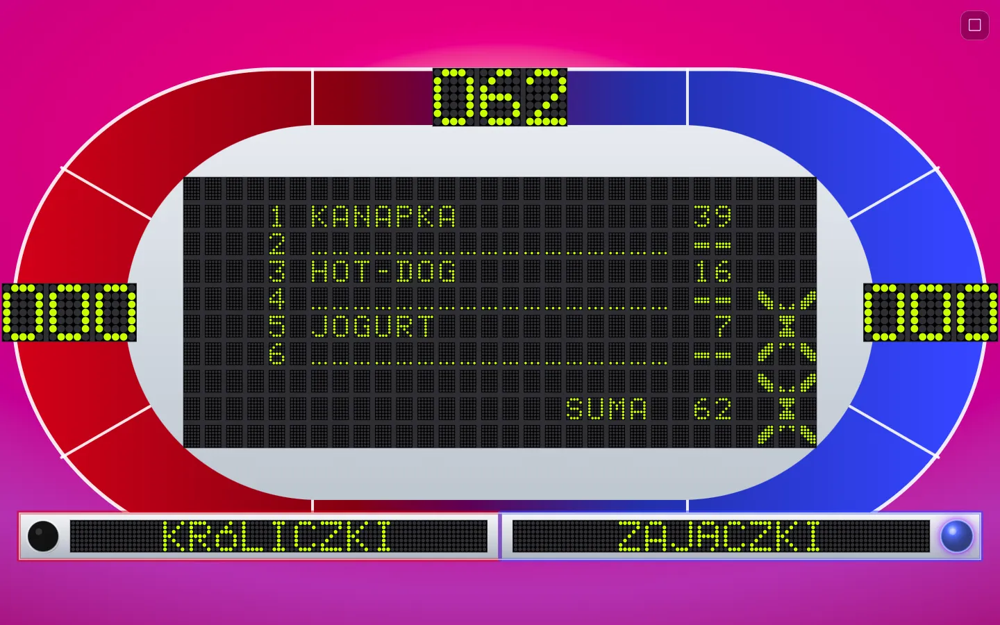
To co widzą wszyscy na sali — pytanie, zakryte odpowiedzi które odsłaniają się jedna po drugiej, bank punktów i błędy X. Podłącz do telewizora lub rzutnika i masz prawdziwy teleturniej.
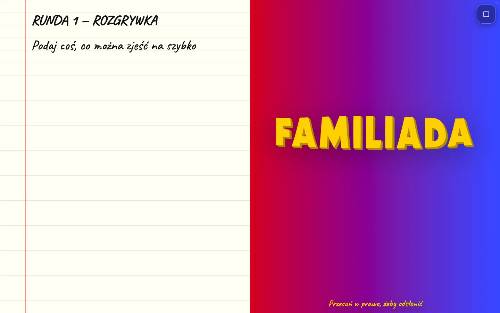
Prowadzący ma osobny ekran z treścią pytań i podglądem odpowiedzi — bez ryzyka przypadkowego kliknięcia w sterowanie grą.
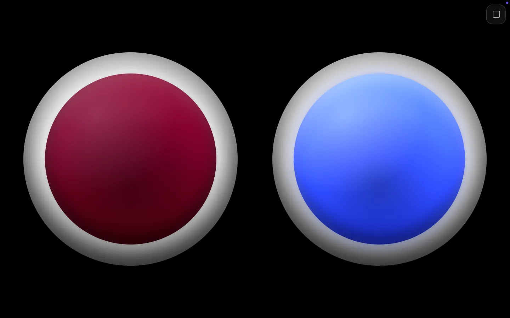
Osobny „przycisk" daje sygnał kto nacisnął pierwszy w pojedynku. Żadnych sporów — ekran pokazuje zwycięzcę, gra toczy się dalej.
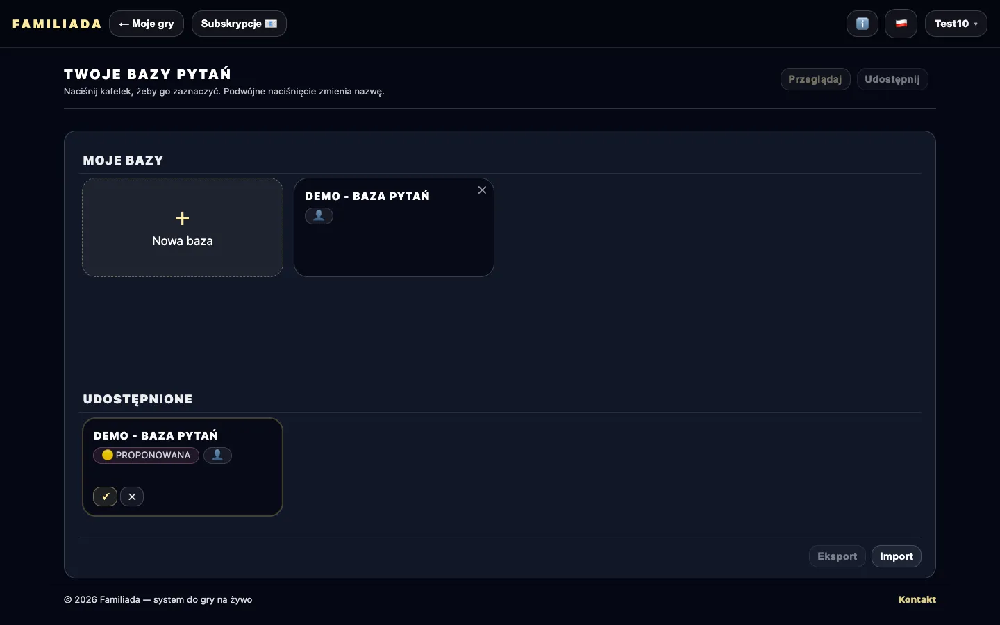
Baza to wspólna biblioteka pytań do wielokrotnego użytku. Organizujesz ją w foldery i tagi, udostępniasz znajomym — i nie musisz za każdym razem zaczynać od zera.
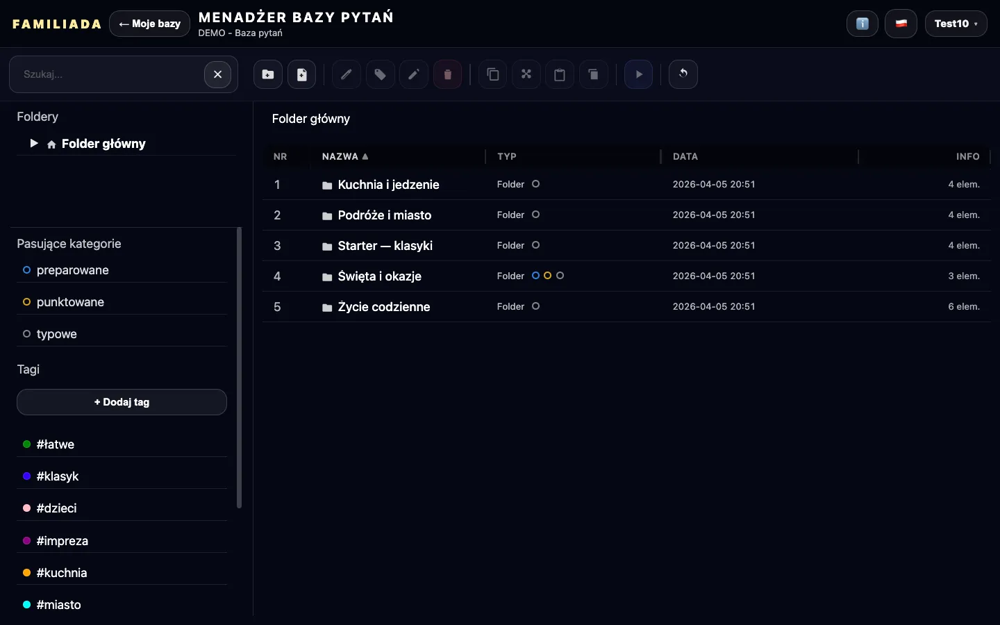
Zarządzasz pytaniami jak w Finder/Explorer: foldery, przenoszenie, kopiowanie, szybka selekcja i wyszukiwanie po nazwie oraz tagach.
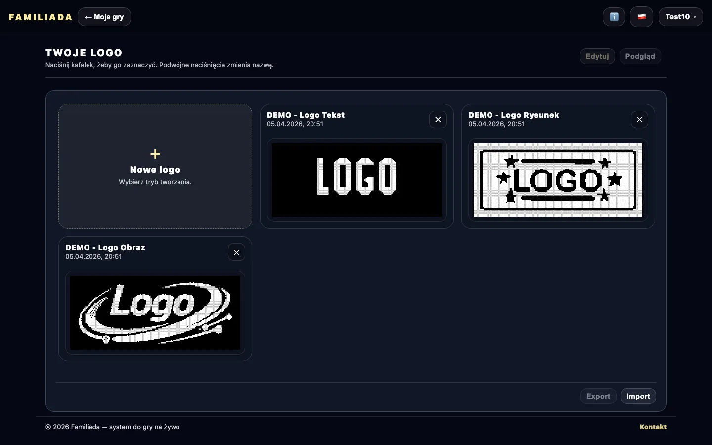
Stwórz własne logo wyświetlane podczas rozgrywki — na ekranie startowym lub zakończenia. Napisy, proste grafiki lub importowany obraz.
Dla kogo
Familiada to sprawdzony format na integrację zespołu — angażuje wszystkich, rozśmiesza i nie wymaga żadnego doświadczenia od uczestników. Przygotuj grę przed eventem, zbierz odpowiedzi w sondażu i poprowadź rozgrywkę na żywo.
Prowadzisz eventy zawodowo i potrzebujesz narzędzia które nie zawiedzie przed klientem. Panel operatora, osobny widok prowadzącego i tablica wyników działają niezależnie — każdy skupia się na swojej roli.
Nauczyciele i animatorzy używają systemu do prowadzenia konkursów klasowych i szkolnych. Sondaż zbiera odpowiedzi uczniów, a tablica wyników buduje napięcie podczas rozgrywki.
Familiada jako atrakcja na weselu lub urodzinach — goście odpowiadają w sondażu przed imprezą, a gra na żywo bawi wszystkich przy stole. Wystarczy telefon, zero technikaliów dla gości.
Panel operatora i osobny widok prowadzącego pozwalają płynnie poprowadzić grę na dużej scenie. Tablica wyników działa na dowolnym ekranie — TV, rzutniku lub monitorze.
Q&A
Tak, system jest w pełni bezpłatny. Możesz tworzyć gry, zbierać sondaże i prowadzić rozgrywkę bez żadnych opłat i bez rejestracji.
Nie. Tryb gościa pozwala tworzyć gry i prowadzić rozgrywkę bez rejestracji — dane są trzymane w przeglądarce. Konto (tylko e-mail, bez logowania przez Google) pozwala synchronizować gry między urządzeniami i udostępniać sondaże znajomym.
Celowy wybór. Prośba o logowanie przez konto Google często wzbudza nieufność — szczególnie gdy ktoś pierwszy raz odwiedza nieznaną stronę. Rejestracja e-mailem jest prosta i nie wymaga przyznawania dostępu do zewnętrznego konta.
Nie. System działa w przeglądarce na każdym urządzeniu — komputerze, tablecie i telefonie. Żadnej instalacji, żadnej konfiguracji.
Głosy są automatycznie normalizowane do 100 punktów — dokładnie jak w prawdziwej Familiadzie w telewizji. Niezależnie od liczby głosujących, wynik wygląda znajomo: „Powiedziano: 67".
Minimalnie dwa — jedno dla operatora (panel sterowania) i jedno jako tablica wyników dla widzów (TV lub rzutnik). Opcjonalnie trzecie dla prowadzącego i czwarte jako buzzer do pojedynku.
Nie. Urządzenia łączą się przez internet, więc mogą być w różnych sieciach i różnych miejscach. To wygodniejsze niż rozwiązania oparte na Bluetooth czy lokalnym WiFi.
Nie ma limitu uczestników. Sondaż działa przez link lub kod QR — mogą odpowiadać dziesiątki lub setki osób jednocześnie.
Tak — wszystkie pytania tworzysz sam w edytorze. Możesz je organizować w bazy z folderami i tagami, udostępniać znajomym i używać wielokrotnie w różnych grach. Nie ma gotowych zestawów pytań do pobrania.
Nie ma limitu gier ani pytań. Jedyne minimalne wymagania dotyczą samej rozgrywki — np. minimalna liczba pytań żeby można było komfortowo poprowadzić grę.
Tak. Każdy widok — operator, prowadzący, tablica, buzzer — działa przez przeglądarkę. Możesz prowadzić grę gdy uczestnicy są w różnych miejscach.
Interfejs jest dostępny w języku polskim, angielskim i ukraińskim. Język zmienia się automatycznie na podstawie ustawień przeglądarki lub ręcznego wyboru.